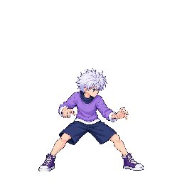

New candidates for review. Recommend idle v08, stagger v05, taunt v05. Hold charge v13, beamFire v09 and run v09. Nothing here is newly approved or live in production.
The three recommended strips passed a strict isolated pack. Full fighter packing still fails charge. Held strips use a diagnostic atlas solely for inspection.
Each player shows the approved combat reference beside the candidate at native pixel density. Toggle motion, step each frame, and compare the complete loop.
QA and budgets · Passing heads · All six heads · Mixed-atlas lineup
